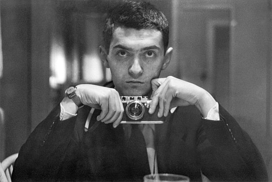

Стенлі Кубрик (англ. Stanley Kubrick, 26 липня 1928, Нью-Йорк, США — 7 березня 1999, Гарпендер, Велика Британія) — американський кінорежисер, сценарист, один із найвпливовіших режисерів в історії кінематографу. Фільми Кубрика вирізняються технічним новаторством і майстерністю, незвичайними, дотепними сценаріями.
Стенлі Кубрик народився 26 липня 1928 рoку в Нью-Йорку і був першою дитиною в єврейській родині Джейкоба Леонарда Кубрика (21 Травня 1902 — 19 Жовтня 1985 Року) і Седі Гертруди Первелер (28 жовтня 1903 — 23 квітня 1985). У травні 1934 року народилася його сестра Барбра Мері. Батько, чиї батьки і бабуся і дідусь по батьківській лінії мали коріння польських, австрійських та румунських євреїв, працював лікарем-хірургом, закінчивши у 1927 році Нью-Йоркський медичний коледж і в той же рік одружився з Седі, яка була дочкою єврейських емігрантів з Австрії. Прадід Кубрика, Герш Кубрик (його прізвище «Kubrick» у різних документах того часу писалася як «Kubrik» або «Kubrike»), прибув на острів Елліс з Ліверпуля на кораблі 27 грудня 1899 року в 47-річному віці, залишивши в Європі дружину і двох дорослих дітей (один з яких був дідусем Стенлі Еліасом), щоб почати нове життя з молодою жінкою. У 1902 році в США перебрався і Еліас. Його батько захоплювався шахами й фотографією, чим зацікавився й хлопець. Він також виявив цікавість до джазу й грав на барабанах. У школі Кубрик не був здібним учнем і не одержав вищої освіти. Коли йому минуло 17 років, хлопець вирішив зайнятися фотографією. Його знімки надруковано в журналі «Look», і відтоді він працював фотокореспондентом. Незабаром почав відвідувати Нью-Йоркський музей сучасного мистецтва й часто ходив у кінотеатри. У 1951 році за порадою друга Кубрик почав знімати короткометражні фільми й рекламні ролики. Пізніше він сфокусувався на оповідальних фільмах і зняв «Fear and Desire (1953), про загін солдатів у тилу ворога на вигаданій війні. 1955 року Стенлі переїхав до Голлівуду, знявши фільм «Killer's Kiss» (1954). Стрічка «The Killing» (1956), — про боксера наприкінці своєї кар'єри, вплутаного в організовану злочинність, стала першою роботою Кубрика за участю професіональної знімальної бригади; не мав комерційного успіху, але одержав позитивні відгуки від критиків.